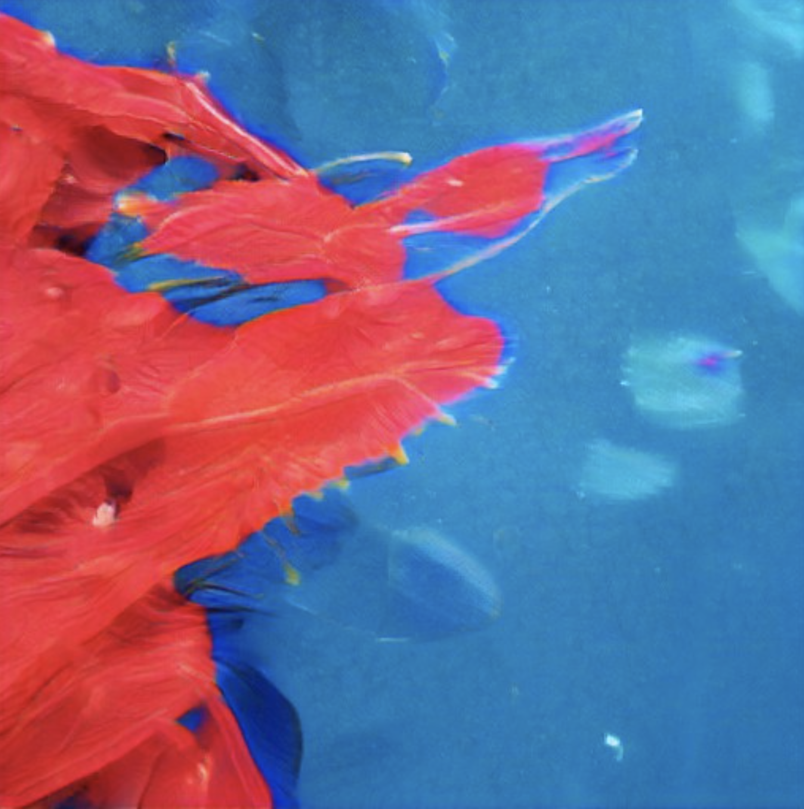
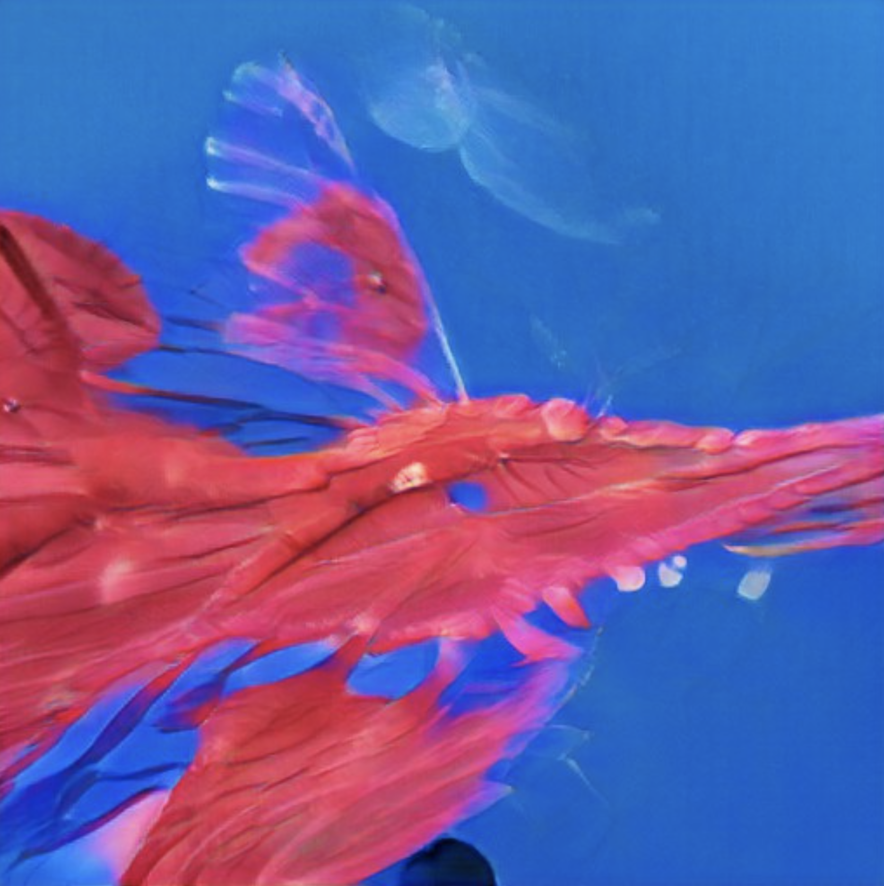
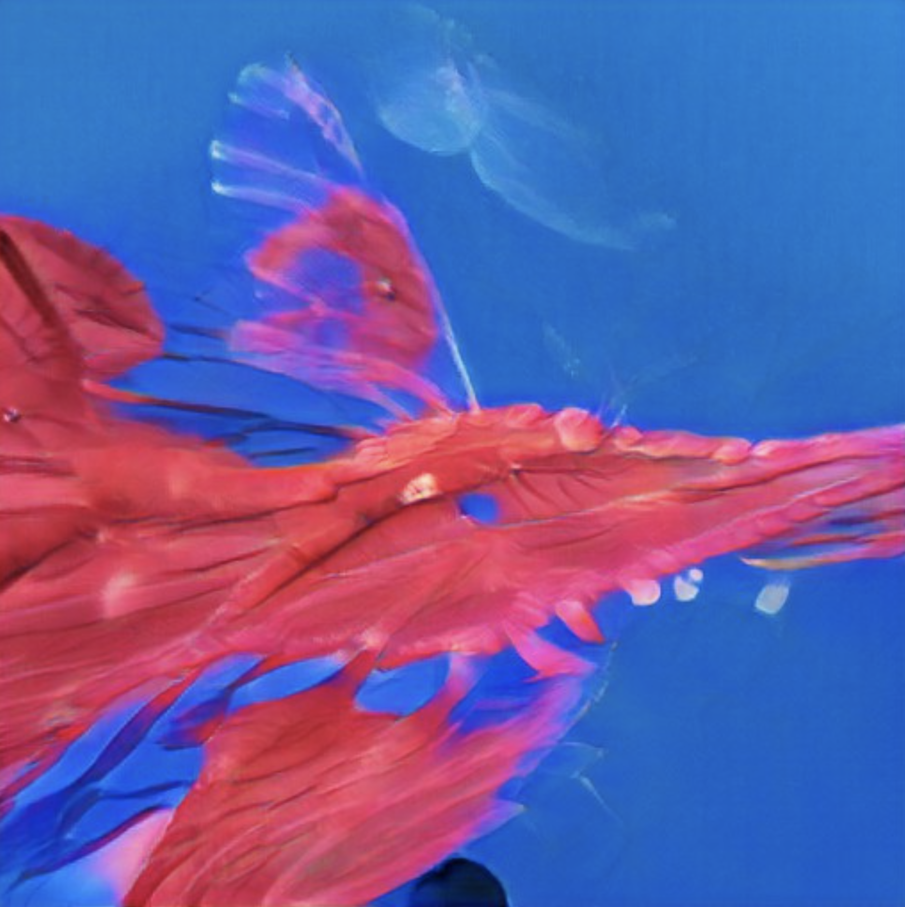

2584
Glaucus atlanticus
Kingdom: Animalia
Phylum: Mollusca
Class: Gastropoda
(unranked): clade Heterobranchia
Superfamily: Aeolidioidea
Family: Glaucidae
Genus: Glaucus
Species: G. atlanticus
Glaucus atlanticus (common names include the sea swallow, blue angel, blue glaucus, dragon slug, blue dragon, blue sea slug and blue ocean slug) is a species of small, blue sea slug, a pelagic aeolid nudibranch, a shell-less gastropod mollusk in the family Glaucidae.
These sea slugs are pelagic; they float upside down by using the surface tension of the water to stay up, where they are carried along by the winds and ocean currents. Glaucus atlanticus makes use of countershading: the blue side of their body faces upwards, blending in with the blue of the water. The silver/grey side of the sea slugs faces downwards, blending in with the sunlight reflecting on the ocean's surface when viewed facing upwards underwater.
Glaucus atlanticus feed on other pelagic creatures, including the Portuguese man o' war and other venomous siphonophores. This sea slug stores stinging nematocysts from the siphonophores within its own tissues as defence against predators. Humans handling the slug may receive a very painful and potentially dangerous sting.
At maturity Glaucus atlanticus can be up to 50 centimetres (19.7 in) in length, though larger specimens have been found. It can live up to a year under the right conditions. It is silvery grey on its dorsal side and dark and pale blue ventrally. It has dark blue stripes on its head. It has a flat, tapering body and six appendages that branch out into rayed, finger-like cerata. Cerata, also known as papillae, extend laterally from three different pairs of peduncles. The papillae are placed in a single row (uniseriate) and may be up to 84 inches total, (Forster, 1777). The radula of this species bears serrated teeth, to which, paired with a strong jaw and denticles allows it to grasp and "chip down" parts of its prey.

 


Copyright 2021 by Nouveaux Specimens.
All Rights Reserved.